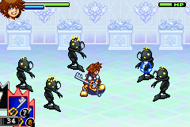
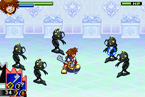

Kingdom Hearts: Chain of Memories

Not-complete on 2018-05-6
2 / 5
Release Date: Dec 7, 2004
Meta Score: 76
Screenshots
 

Notes
Kingdom Hearts: Chain of Memories is an action RPG in the popular Kingdom Hearts series which blends Disney and Square-Enix properties into a surreal and surprisingly serious-at-times universe. It sits between KH1 and KH2 (both originally on the PS2) in the series continuity, and has been remade as Kingdom Hearts: Re:Chain of Memories for home consoles.
To avoid burying the lede: I got up to the final boss, after significant difficulties, at which point I realised actually beating her would take a lot more effort and grinding when I was already fed up. So I rage quit and moved on.
The core gameplay is an action rpg, with the twist that you are using a deck of cards to perform all your actions including hitting the enemy, casting spells, etc. The enemies also use cards for their attacks. If you attack at the same time as an enemy the higher numbered card wins out and the other is broken and does nothing. A 0 will break any other card but only if it is "played" second. Outside of this you can jump and dodge and move around without cards in battle. Finally you can combine 2 or 3 cards into a "sleight" which adds their values and may perform a special combo if you use the right cards. For example, 3xFire=Firaga.
When you run out of cards in your deck, you can "reload", giving you back all your unbroken cards. Some items also reload unbroken or broken cards instantly. This all means that long boss battle wear down your supply of cards, which can mean a slow and painful death if you are not quite strong enough to win.
This system seems nuance, and takes a little while to get your head around, but it's actually kind of shallow. High numbered cards, and 0s, are good. Low numbered cards are basically garbage. Also the fact a 0 breaks anything means that you can get royally screwed by setting up a big combo only to have the enemy break it with a 0. Most of this stuff only comes into play in boss battles. Everything happens so fast, that you don't have time to think carefully about what you're playing most of the time.
You go through a series of worlds themed around Disney properties, which is standard for Kingdom Hearts. To move between rooms you need room cards, gained by battling, which follow a similar numerical system to the battle cards. This is mostly fine, except when story rooms require you to have very specific cards and the only way to get them is to grind random battles.
The story is your typical Kingdom Hearts convoluted mess, revolving around Sora's journey through Castle Oblivion trying to find King Mickey and Riku. He starts to lose his memories and gain false memories. The worlds here are apparently constructed from memories inside Castle Oblivion, so are not real. The antagonists are the shadowy Organisation XIII, whose goals are mysterious and convoluted. I'm not sure what they are really trying to achieve with any of this. Also Sora just kind of wanders into the castle apparently by chance. It's just not well explained as far as I can tell.
A big criticism is that everything in KH:CoM is ripped from KH1. All the worlds, and most of the bosses with the exception of the last world and the Organisation XIII guys. They've been modified for the card battle system and shrunk down to GBA size, but the designs are all straight from KH1.
I enjoyed the first 3/4 of the game, but as alluded to above, the wheels fell off right near the end. You need very specific cards to open some story rooms near the end, and the only way to get them is to get lucky or grind for hours. What's worse is that these cards are not obviously rare, so I think I had one earlier in the game but just used it without realising the gold dust I was throwing away. The internet is full of people asking how to find a 1 Blue card, and being told they just need to grind away until it drops. I ground for hours, with no luck, so I used a cheat code just to try and finish the game. The final boss however proved to be nasty, and all that grinding for room cards does nothing to actually improve your battle deck. At this point I had had enough and quit.